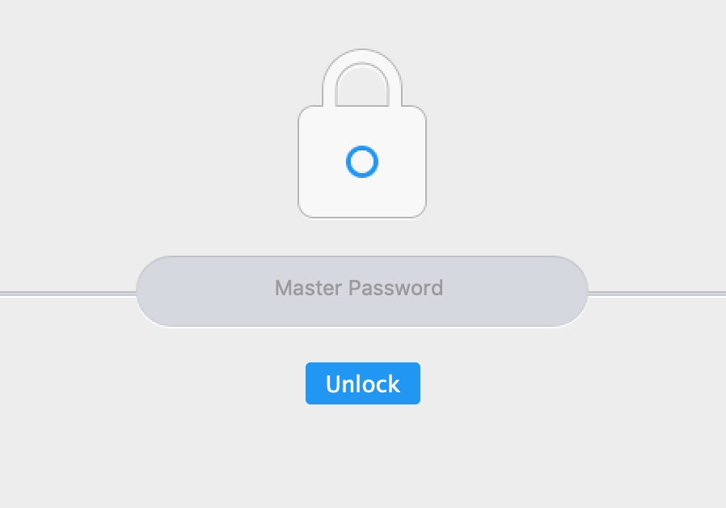
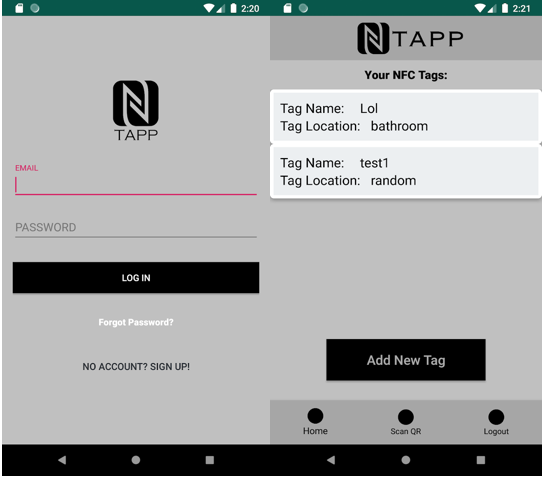
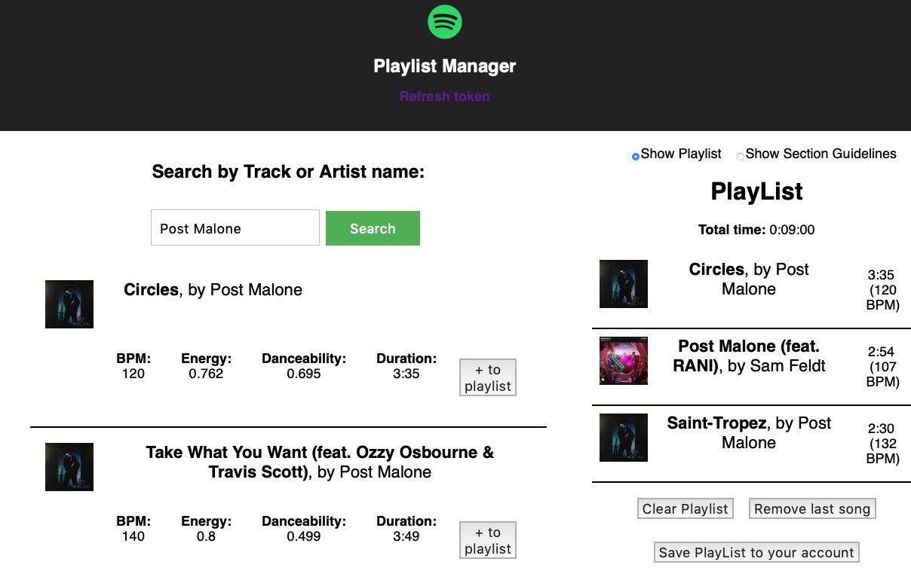
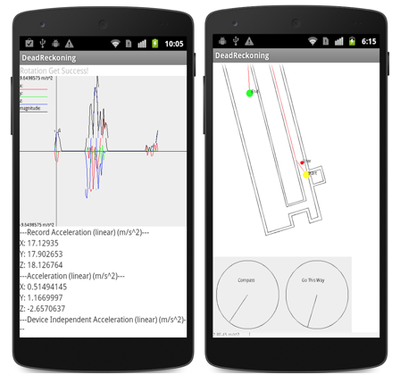
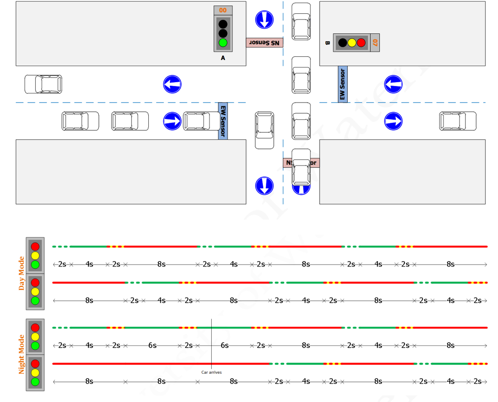
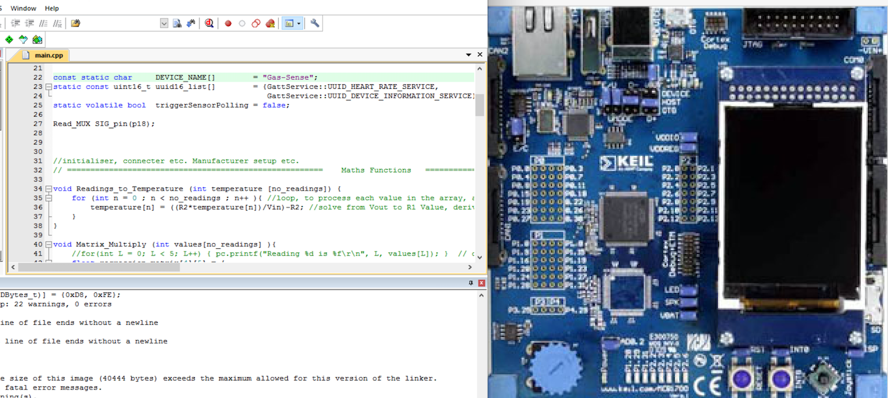
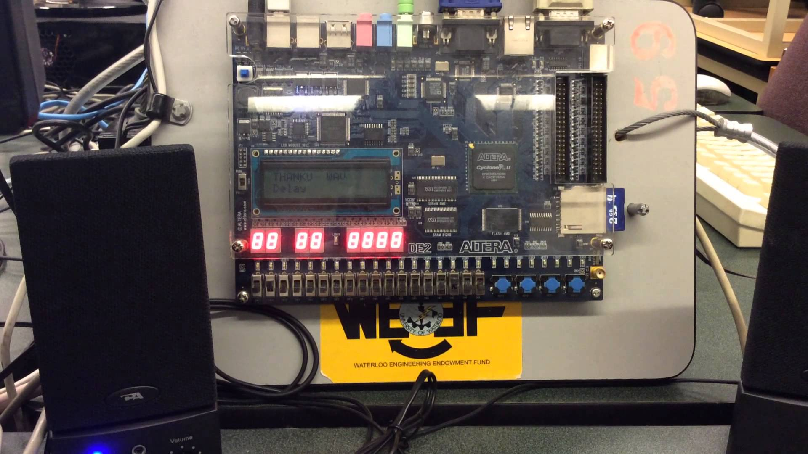

Projects
Password Manager
• Securely store login credentials with the help of a master password
• Subtle WebCrypto (10x faster than traditional crypto libraries), AES-256 encryption standard is used for encrypting and decrypting the login credentials
• SHA-256 hashing is used for the master password and user sessions are maintained
• Login credentials for each site are only decrypted on demand and only the user has access to the same
• Technologies used : Javascript, PHP, SQL
Edge Detection
• Implemented Kirsch edge detector algorithm in VHDL to detect edges by identifying an abrupt change in the brightness for each pixel
• Optimized the algorithm by using overlapping pipelining for the data
• Technologies used : VHDL, FPGA
Tapp - NFC Application
• Tapp allows you to register NFC tags and trigger desired tasks by tapping the device against an NFC tag
• Triggered tasks are configurable and can be shared via Tapp QR codes
• Tapp lets you sync your NFCs across all your devices and each NFC tag can trigger multiple tasks
• Technologies used : Java, Firebase, NFC, XML
YouTube
Google Play Store
Social Playlist Manager
• Web app that allows users to choose the next song at social events via a voting mechanism
• Spotify sign in using OAuth to create curated workout playlists based on BPM, energy, etc.
• Maintained music priority queues and user sessions using Node and MongoDB
• Technologies used : React, Node, MongoDB, Spotify
Path Finder
• Determines and displays a path between two points on an indoor map that updates based on user position
• Designed and implemented a pedometer algorithm, by identifying patterns from the accelerometer
readings in a finite state machine to determine when a step is taken
• Filtered raw sensor data to account for noise and bias by using the low pass filter which
attenuates high frequency signals
• Technologies used : Java, XML, Android Studio
Traffic Light Controller
 • Programmed an FPGA using VHDL to act as a traffic light controller, involving finite state machines
running on a clock
• Included binary and modulus counters for the clock divider which determines the flashing of
the lights using the clock frequency
• Allows traffic to flow efficiently by changing lights based on car detection
• Technologies used : VHDL, Counters, FPGA
Digital Computer | ARM
• Accessed peripherals connected to a microprocessor using ARM assembly.
• Implemented a
• Enabled an interrupt source in the LPC1768 microprocessor and an
Audio Player
• Implemented an audio player with various playback modes such as normal speed, half speed, double speed, channel delay, and reverse in C.